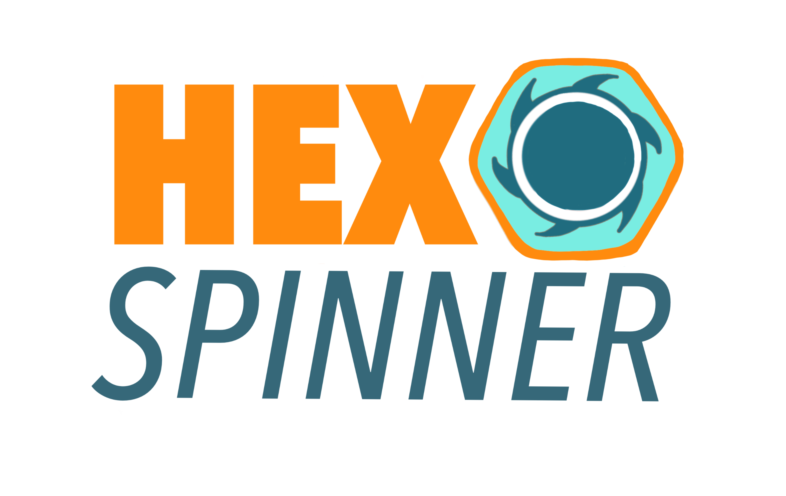

My Projects
This page highlights my personal engineering projects and graduate research. My personal projects are pursued in my free time as a hobby, allowing me to explore new skills and creatively design mechanical, electrical, and computer engineering projects.

CRADS 360° SMD
Continuous Rotation Angle Detection Sensor (CRADS) - Novel cost effective continuous 0–360° rotary position sensing without dead zones.
- Patent No: US 12584725 - issued 03/24/26

Hex Dominant Meshing Tool
Automated hex-dominant meshing tool that generates meshes from CAD (STEP) and surface (STL/OBJ) geometries using a voxelization-based approach.

Hex Spinners
Designed and manufacture a silent magnetic fidget toy.
- Patent pending
- Hex Fidgets LLC

MILO
Developed MILO (Motion Input for Language and Operation), a custom neural network and GUI that learns hand gestures and interprets basic sign language.

Graduate research: SIFM
Developed the Single Incision Free Motion (SIFM) laparoscopic system, a magnetically actuated surgical platform that enables increased tool mobility through a single incision.
- Multiple publications
- Patent - international publication number: WO 2023/043693 A1 - issued 03/23/23